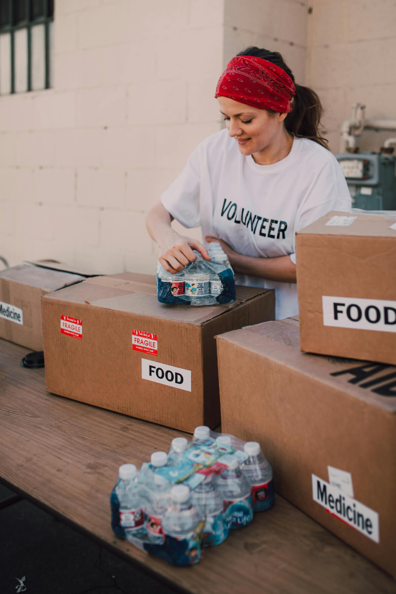

Mutirão Prato Cheio
Arrecadamos e distribuímos mensalmente centenas de cestas básicas para famílias cadastradas em comunidades carentes. Nosso foco é a nutrição e a segurança alimentar.
Arrecadamos e distribuímos mensalmente centenas de cestas básicas para famílias cadastradas em comunidades carentes. Nosso foco é a nutrição e a segurança alimentar.
Levamos água potável para regiões afetadas pela seca em Minas Gerais. Cada galão de água é uma chance de saúde e esperança para quem mais precisa.
O seu tempo pode salvar vidas. Precisamos de voluntários para coleta, organização de estoques e distribuição de alimentos e água. Cadastre-se para ser um voluntário!
Sua contribuição financeira nos permite comprar alimentos não perecíveis em atacado e financiar caminhões-pipa. Qualquer valor faz a diferença.